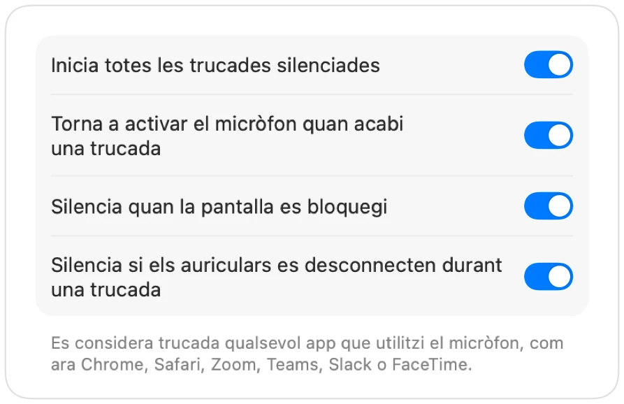

Com silenciar Microsoft Teams amb els AirPods al Mac
La drecera de Teams, Ordre-Majúscules-M, només funciona quan la finestra de Teams està activa. Durant una reunió normalment fas altres coses: consultar un document, mirar el navegador o compartir la pantalla.
Muffle silencia el micròfon des de qualsevol lloc, tant a l'app de Teams com a Teams al web. Prem els AirPods, prem una sola drecera o fes clic a la barra de menús.
Silencia Teams des de qualsevol lloc
- 1
Instal·la Muffle i permet l'accés al micròfon.
- 2
Uneix-te a la reunió de Teams.
- 3
Prem Control-Opció-M o la vareta dels AirPods per silenciar. La icona de la barra de menús es tornarà vermella.
- 4
Torna a prémer per activar el so, o mantén premuda la drecera per parlar mentre estiguis silenciat.

- Si utilitzes Teams en una pestanya del navegador, obtens la mateixa compatibilitat amb els AirPods que a Google Meet gràcies a Muffle.
- Activa «Silencia quan la pantalla es bloquegi» perquè el micròfon mai quedi obert si t'aixeques del Mac.
Preguntes
Funciona la pulsació dels AirPods a l'app de Teams?
Depèn de la versió de Teams, ja que Teams pot rebre la pulsació directament. La drecera de Muffle i el botó de la barra de menús funcionen en tots els casos.
Teams mostrarà que estic silenciat?
No sempre. Muffle silencia el micròfon, de manera que Teams pot continuar mostrant-lo com a actiu mentre tothom sent silenci.